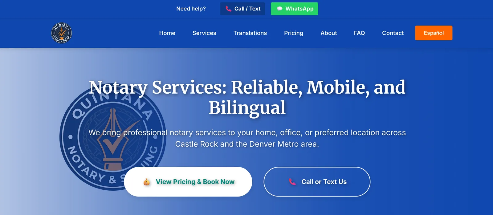
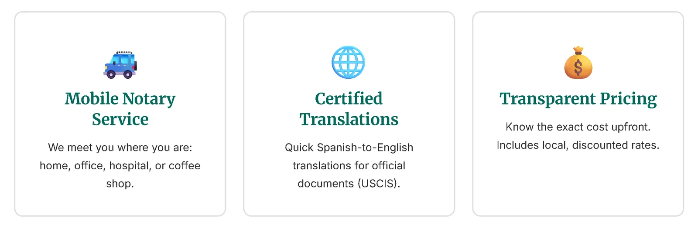
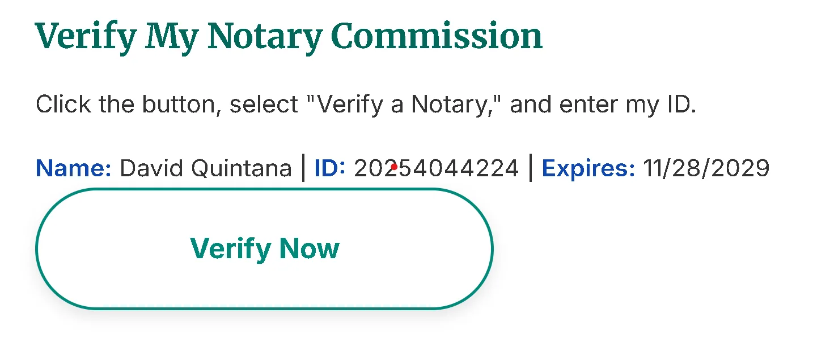
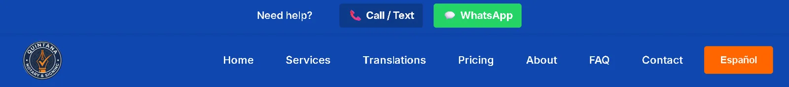
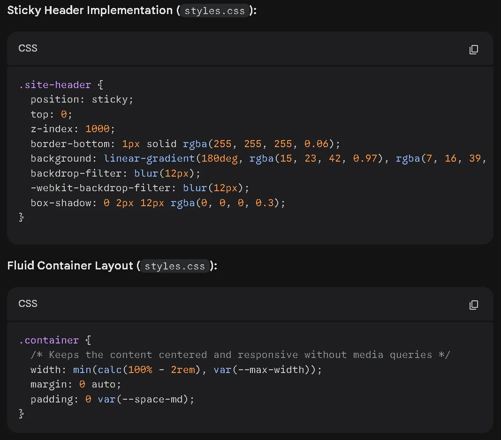
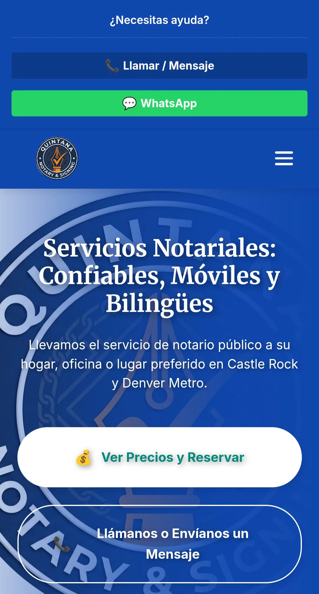
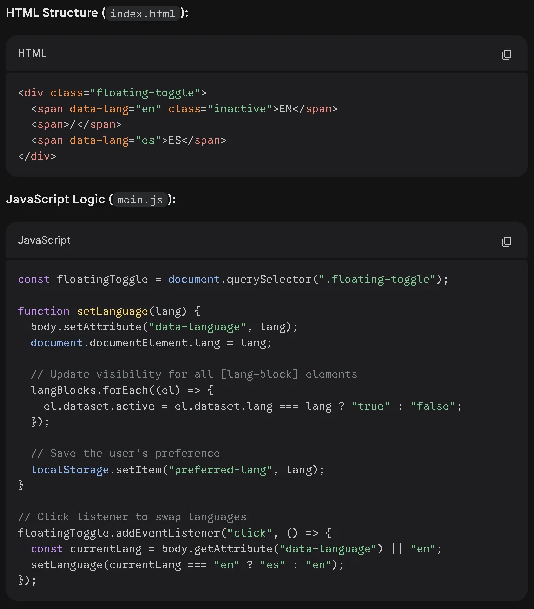

Client case study · Bilingual notary services
Caso de cliente · Servicios notariales bilingües
Quintana Notary & Signing: trust through transparent design
Quintana Notary & Signing: confianza a través del diseño transparente
How plain-language communication, mobile-first design, and front-and-center verification create a trustworthy digital presence for a mobile notary business.
Cómo la comunicación en lenguaje sencillo, el diseño móvil primero y la verificación visible crean una presencia digital confiable para un negocio notarial móvil.

Overview
Resumen
Purpose
Propósito
The official digital presence for my mobile notary business in Colorado: a platform that feels trustworthy, simple, and welcoming — especially for clients who aren't tech-savvy or familiar with legal terminology.
La presencia digital oficial de mi negocio de notario móvil en Colorado: una plataforma confiable, simple y acogedora — especialmente para clientes que no son expertos en tecnología ni conocen la terminología legal.
Goals
Objetivos
Build immediate trust through transparent verification, explain services in everyday language, ensure full mobile usability for older adults and busy families, support English and Spanish, and reduce confusion and unnecessary phone calls.
Generar confianza inmediata con verificación transparente, explicar los servicios en lenguaje cotidiano, garantizar usabilidad móvil para adultos mayores y familias ocupadas, ofrecer inglés y español, y reducir la confusión y las llamadas innecesarias.
Design decisions
Decisiones de diseño

Three services, explained in plain language
Tres servicios, explicados en lenguaje sencillo
Each service gets an icon, a descriptive title, and a one-sentence explanation, so clients understand the offer without navigating multiple pages.
- Mobile notary service: We meet you where you are: home, office, hospital, or coffee shop.
- Certified translations: Spanish-to-English translations for official documents (USCIS) that meet government requirements.
- Transparent pricing: Know the exact cost up front, including local and discounted rates — no hidden fees.
Cada servicio tiene un ícono, un título descriptivo y una explicación de una oración, para que los clientes entiendan la oferta sin navegar varias páginas.
- Servicio de notario móvil: Nos reunimos donde estés: hogar, oficina, hospital o café.
- Traducciones certificadas: Traducciones de español a inglés para documentos oficiales (USCIS) que cumplen requisitos gubernamentales.
- Precios transparentes: Conoce el costo exacto por adelantado, con tarifas locales y descuentos — sin cargos ocultos.

Trust-first verification
Verificación primero
A custom banner shows my full name, commission ID, expiration date, and a button that opens the Colorado Secretary of State's official notary search.
- Most notary sites bury or omit verification details
- Clients confirm credentials in seconds — no searching, no guessing
- Proof of legitimacy appears before any sales copy
Un banner personalizado muestra mi nombre completo, ID de comisión, fecha de vencimiento y un botón que abre la búsqueda oficial de notarios del Secretario de Estado de Colorado.
- La mayoría de sitios notariales ocultan u omiten la verificación
- Los clientes confirman credenciales en segundos — sin buscar ni adivinar
- La prueba de legitimidad aparece antes que cualquier texto de venta


Instant contact on every page
Contacto inmediato en cada página
A sticky bar with call, text, and WhatsApp buttons stays visible at every scroll position. It removes the most common question — "How do I contact you?" — and supports each client's preferred channel, which matters most for older adults.
Una barra fija con botones de llamada, mensaje y WhatsApp permanece visible al desplazarse. Elimina la pregunta más común — "¿Cómo te contacto?" — y respeta el canal preferido de cada cliente, algo clave para adultos mayores.


Mobile-first and bilingual
Móvil primero y bilingüe
Most clients look up services on a phone, so every layout starts at 320px: a single column with large touch targets, then two-column grids on tablets and wider, centered blocks on desktop.
The whole site switches between English and Spanish, and the choice persists across pages with localStorage.
La mayoría de los clientes buscan servicios desde el teléfono, así que cada diseño empieza en 320px: una columna con botones grandes, luego cuadrículas de dos columnas en tableta y bloques centrados en escritorio.
Todo el sitio cambia entre inglés y español, y la elección se mantiene entre páginas con localStorage.
A palette that signals trust
Una paleta que transmite confianza
Navy establishes authority and credibility, teal adds warmth, and orange is reserved for actions so the next step is always obvious.
El azul marino establece autoridad, el verde azulado aporta calidez y el naranja se reserva para acciones, así el siguiente paso siempre es claro.
NavyMarino#0F47AFTrust & legitimacyConfianza y legitimidad
TealVerde azulado#00897BApproachabilityCercanía
OrangeNaranja#FF6600High-visibility calls to actionLlamados a la acción